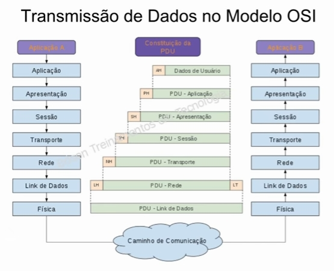
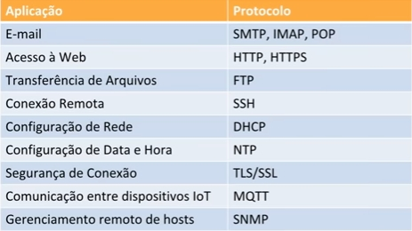
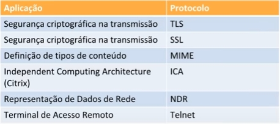
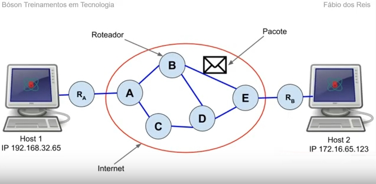
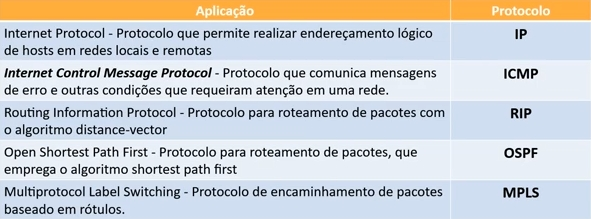

Aprenda Redes
Tudo sobre Redes Parte 10
Camada de Aplicação do Modelo OSI
Como lembrando, o modelo OSI é composto por sete camadas (numeradas de 1 a 7, de baixo pra cima):
| Camada de Aplicação |
| Camada de Apresentação |
| Camada de Sessão |
| Camada de Transporte |
| Camada de Rede |
| Camada de Link de Dados |
| Camada Física |
Como visto, a camada física é a de mais baixo nível (mais distante do usuário), e a camada de aplicação é a de mais alto nível (mais próxima do usuário).
A transmissão de dados é feita de camada para camada, e os dados de aplicação da máquina A é passado por todas as camadas, passa pelo caminho de comunicação e passa por todas as camadas da máquina B até chegar na camada de aplicação dela, como visto na imagem abaixo:
A camada de aplicação (7 do modelo OSI) fornece interface de comunicação entre aplicações e serviços de rede. Também define processos de autenticação de usuários nas aplicações. Arquitetura cliente-servidor, habilita usuários (humanos ou sistemas) a acessarem recursos de rede. A camada de aplicação é crucial, pois permite que aplicações seja acessadas e executadas em ambiente de rede, incluindo a web.
É a camada mais próxima do usuário final, fornecendo uma interface entre as aplicações que são utilizadas para a comunicação e a rede por onde as informações (mensagens) são transmitidas. Diversos protocolos na camada de aplicação são usados para realizar a troca de dados entre os programas que são executados nos hosts de origem e de destino. Também é empregada na pilha TCP/IP, porém um pouco mais complexa, englobando mais de uma camada dessa pilha. Definida pela RFC 1123, encontrada aqui: https://tools.ietf.org/html/rfc1123.
Processos são programas ou serviçoes em execução em um sistema. Em rede, os processos funcionam de forma combinada, em pares, de modo que um processo origina e envia mensagens e um outro processo as recebe, podendo responder com outras mensagens. O processo que origina a comunicação é chamado de processo cliente, ao passo que o processo de destino é o processo servidor. Exemplo clássico é o processo de resolução de nomes DNS, que utiliza o protocolo de camada de aplicação homônimo (DNS).
Podemos descrever as camadas que compões a pilha TCP/IP em termos do modelo OSI. Neste caso, a camada de aplicação TCP/IP engloba as camadas de aplicação, apresentação e sessão do modelo OSI, como podem ver:
| TCP/IP | Referente ao Modelo OSI |
|---|---|
| Aplicação | Aplicação |
| Apresentação | |
| Sessão | |
| Transporte | Transporte |
| Rede (Internet) | Rede |
| Física | Enlace |
| Física |
Como há inúmeras aplicações que fazem uso da camada de aplicação, há vários protocolos que as servem alguns exemplos:
Camada de Apresentação do Modelo OSI
A camada de apresentação (6 do modelo OSI) se relaciona com a sintaxe e a semântica na comunicação entre sistemas. É responsável pelos processos de codificação de caracteres e tradução, compressão e criptografia dos dados tanto na origem quanto no destino da transmissão. É incluída na camada de aplicação da pilha TCP/IP.
As funções da camada de apresentação são codificação de caracteres, formatação de dados, comunicação entre sistemas diferentes, segurança e privacidade nas transmissões de dados e aumento da performance da transmissão.
A comunicação entre sistemas é um processo de troca de informações em formatos variados que são convertidas em bits ao serem transmitidas. Computadores podem utilizar sistemas de codificação distintos, assim, a camada de apresentação no transmissor se ocupa de traduzir a informação, deixando-a em um formato comum. A camada de apresentação do receptor traduz a informação do formato recebido para o formato específico que será processado no dispositivo.
No processo de tradução, os formatos comuns de dados incluem JPEG, GIF, PNG, MPEG, etc.
Quando enviamos informações confidenciais, o sistema deve garantir a privacidade da comunicação. Com a criptografia ou cifragem, o emissor modifica os dados originais para um formato codificado, por meio de algoritmos específicos, e envia a mensagem pela rede. Ao chegar no destino, a mensagem é convertida de volta em seu formato original por meio do algoritmo adequado no processo chamado descriptografia ou decifragem. Um exemplo banal é o envio de uma senha durando o processo de logon em um sistema.
Enviar dados no formato original (como áudio, vídeos ou imagens) pode ocupar muito espaço na transmissão. Assim, aplicamos um processo de compressão no qual a quantidade de bits transmitidos é reduzida antes do envio da mensagem, tornando a transmissão mais rápida. Quando a mensagem chega ao seu destino ela é descomprimida, voltando ao seu formato original.
A tabela a seguir lista alguns dos protocolos da camada de apresentação mais comuns:
Camada de Sessão do Modelo OSI
A camada de sessão (camada 5 do modelo OSI) tem por função estabelecer, gerenciar e finalizar conexões entre aplicações. Assim ela configura, coordena e termina a troca de dados entre aplicações em cada ponta de uma conexão, mantendo as sessões de comunicação.
Responde a requisições de serviço da camada de Apresentação e emite requisições de serviço para a camada de transporte.
Também incluída na camada de Aplicação da pilha TCP/IP.
Essas são as funções da camada de sessão:
- Estabelecer, manter e terminar sessões: Permite que dois processos estabeleçam, usem e finalizem uma conexão.
- Sincronização: Permite que os processos criem pontos de sincronização de dados. Assim, erros podem ser identificados com mais facilidade, e os dados podem ser re-sincronizados.
- Controle de Diálogo: Os processos podem escolher iniciar a comunicação entre si em modos half-duplex, simplex ou full-duplex.
A tabela a seguir lista alguns dos protocolos da camada de sessão mais comuns:

Camada de Transporte do Modelo OSI e Protocolos
A camada de transporte (modelo OSI, camada 4) tem por função fornecer um fluxo de dados entre dois hosts, para a camada de aplicação. Responde a requisições de serviço da camada de sessão e emite requisições de serviço para a camada de rede. Corresponde à camada homônima na pilha TCP/IP.
Podemos descrever as camadas que compõe a pilha TCP/IP em termos do modelo OSI. Algumas funções da camada de sessão OSI estão na camada de transporte TCP/IP. Veja abaixo:
| TCP/IP | Referente ao Modelo OSI |
|---|---|
| Aplicação | Aplicação |
| Apresentação | |
| Sessão | |
| Transporte | Transporte |
| Rede (Internet) | Rede |
| Física | Enlace |
| Física |
As funções da camada de trasporte são essas:
- Fornece serviços de comunicação host a host para aplicações.
- Fornece serviços como controle de flux e comunicação orientada a conexão.
- Permite a entrega de pacotes na mesma ordem que foram enviados.
- Permite entrega confiável de pacotes, se pacotes forem perdidos, podem ser reenviados.
- Multiplexação: O uso de portas permite que várias aplicações no mesmo computador acessem a rede de forma simultânea.
Já sobre as portas de comunicação é isso:
- São usadas para determinar qual processo em um host local se comunica com qual processo em um host remoto.
- Para um processo se comunicar com outro processo utilizam-se portas. Uma porta é um número de 16 bits (de 0 a 65535), que identifica qual protocolo da camada superior (ou programas) devem entregar as mensagens recebidas.
- As portes podem ser bem-conhecidas, registradas ou efêmeras.
- As portas são sempre associadas com um endereço IP e um protocolo de transporte.
Sobre os soquetes (sockets):
- Um soquete é uma API para protocolos de comunicação.
- Usado por um processo para solicitar serviços de rede do sistema operacional.
- Composto por: Protocolo, endereço, processo (por exemplo
{TCP, 192.168.22.35, 80}ou192.168.22.53:80).
Veja uns exemplos de portas bem-conhecidas:
| Aplicação/Serviço | Porta |
|---|---|
| FTP | 21 |
| SSH | 22 |
| Telnet | 23 |
| DNS | 53 |
| DHCP | 67 |
| 68 | |
| HTTP | 80 |
| IMAP | 143 |
| HTTPS | 443 |
A tabela a seguir lista alguns dos protocolos da camada de transporte mais comuns (modelo TCP/IP):
| Aplicação | Protocolo |
|---|---|
| Fluxo de dados confiável (conexão) entre dois hosts. Assim, a entrega dos pacotes, chamados de segmentos, de um host a outro é garantida. | TCP |
| Envia pacotes de dados chamados de datagramas de um host a outro, sem garantia de que esses pacotes cheguem ao seu destino. | UDP |
| Steam Control Transmission Protocol. Orientado a mensagens como o UDP, com controle de congestionamento como o TCP. Fornece caminhos redundantes que aumentam a resiliência e confiabilidade da conexão. Nativo no FreeBSD v.7, portado para outros sistemas. | SCTP |
Camada de Rede do Modelo OSI e Protocolos
Como sabemos, o modelo OSI é composto por sete camadas, de rede é a terceira.
A camada de rede tem por função principal realizar a entrega de pacotes entre dois hosts de rede. Responde a requisições de serviço da camada de transporte e emite requisições de serviço para a camada de link de dados. Seu trabalho é levar pacotes da origem até o destino. Corresponde à camada de internet na pilha TCP/IP.
Sobre a camada de rede:
- Introduz a capacidade de rotear o tráfego de um ponto da rede a outro, por meio de subredes (camada de roteamento).
- Aplica um esquema de endereçamento lógico aos pontos de rede, por exemplo o endereço IP.
- Fragmenta os dados a serem transmitidos, caso o tamanho desses dados exceda um limite, de modo que segmentos de rede que não suportem quadros de tamanho grande possam também enviar dados sem problemas.
- O PDU da camada de rede é chamado de pacote.
- PDU (Protocol Data Unit) é um nome dados a um conjunto de dados presentes em uma determinada camada da pilha de protocolos.
Veja como funciona essa camada:
Podemos descrever as camadas que compões a pilha TCP/IP em termos do modelo OSI. A camada de internet TCP/IP é, na verdade, um subconjunto da camada de rede do modelo OSI.
| TCP/IP | Referente ao Modelo OSI |
|---|---|
| Aplicação | Aplicação |
| Apresentação | |
| Sessão | |
| Transporte | Transporte |
| Rede (Internet) | Rede |
| Física | Enlace |
| Física |
Essas são as funções da camada de rede:
- Endereçamento lógico e conversão de endereço físico.
- Encaminhamento de pacotes entre segmentos de redes distintos.
- Roteamento - Mecanismo para que roteadores se interconectem a redes físicas distintas.
- Controle de tráfego e QoS (Quality of Service).
- NAT (Network Address Translation).
- Entrega de relatórios de erros.
Sobre o endereçamento lógico (o IP):
- Endereçamento IP.
- Oculta a rede física, criando uma visão virtual da rede.
- Protocolo de entrega de pacote não-confiável, de melhor esforço e sem conexão.
- Melhor esforço: Os pacotes enviados podem ser perdidos, ficar fora de ordem ou serem duplicados.
- Duas versões: IPv4 e IPv6.
- Exemplo de IPv4: 193.35.62.31
- Exemplo de IPv6: 2001:0ba6:0000:0000:0000:ff00:0051:9647
Essa é a estrutura de um pacote IPv4:
| Estrutura de um Pacote IP |
|---|
| Versão (4 bits) |
| Tamanho do Cabeçalho (4 bits) |
| DSCP (6 bits) |
| ECN (2 bits) |
| Tamanho Total (16 bits) |
| Identificação (16 bits) |
| Flags (3 bits) |
| Offset de Fragmento (13 bits) |
| Tempo de Vida - TTL (8 bits) |
| Protocolo (8 bits) |
| Checksum do Cabeçalho (16 bits) |
| Endereço IP de Origem (32 bits) |
| Endereço IP de Destino (32 bits) |
| Opções (32 bits) |
| Dados (até 64 Kb) |
Alguns dos dispositivos que operam na camada de rede do modelo OSI incluem: Roteadores, firewall, switches (L3) e access points.
A seguir estão listados alguns dos protocolos da camada de rede mais comuns (modelo TCP/IP):
Um dos programas que usa o ICMP é o famoso "ping".